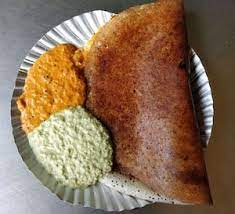

Masala Dosa

Description
This classic Masala dosa recipe makes perfectly light, soft and crispy crepes stuffed with a savory, wonderfully
spiced potato and onion filling.
It might take a bit of time to make delicious hotel style masala dosa, but with my step-by-step instructions, I
promise it will be easier than you think and is so worth the effort!
Ingredients
- Just grab a readymade Dosa batter from your local grocery store.
I personally prefer the batter made by Chennai Caters,
but you can buy any of the various brands available.
- You will need a non-stick tawa. Duh
- You will need a wood spatula. Yes, wood! Not metal or silicon spatulas.
- You will also need a gallon or two of ghee (clarified butter), see I am saving you the trouble of
googling what ghee means. Am I awesome or what?
- Lastly, if you can lay your hands on this, buy a shit ton of the pudi that's available at Umesh
Dosa Point.
Oh, by the way, the pudi is also called gun powder. Yes, that dosa be smokin'
hot.
Steps
- First take all the ingredients in three bowls. Note that these ingredients are easily available online or
any Indian or Asian grocery store if you live outside India.
- Rinse the lentils and fenugreek seeds a couple of times. Then soak them in 1 cup water for 4 to 5 hours.
- Rinse the rice a couple of times and keep aside.
- Rinse flattened rice once or twice and then add to the rice.
- Pour 2 cups water. Stir and soak both rice and flattened rice together for 4 to 5 hours.